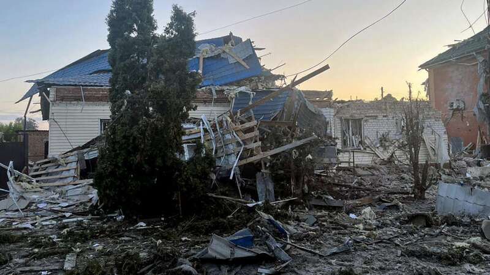
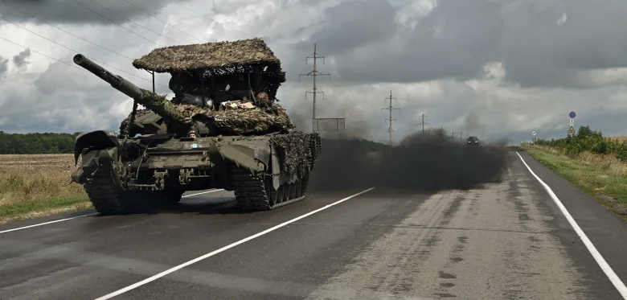
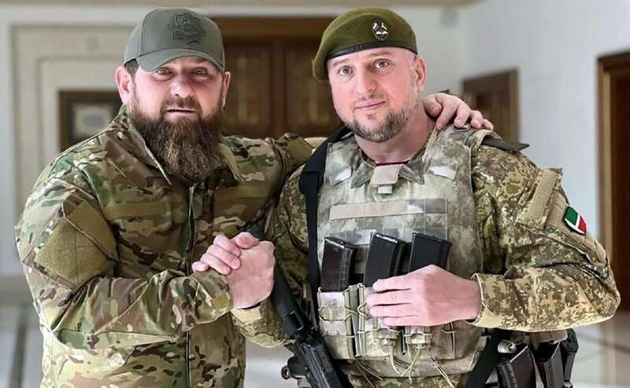
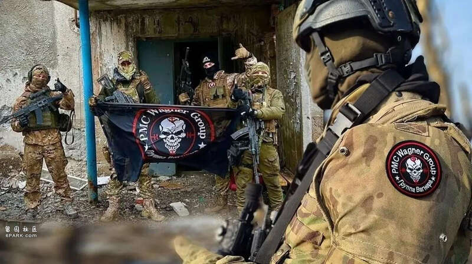
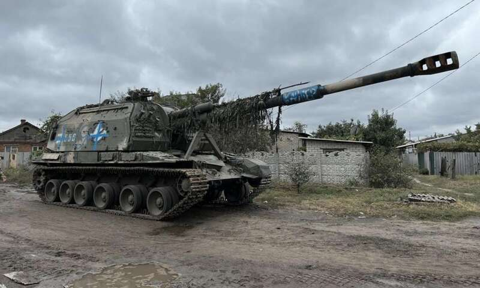

据俄罗斯卫星网8月8日报道，在乌军突然攻入俄库尔斯克州后，俄军迅速调集军力，目前俄北方集团军和俄联邦安全局下属的特种部队已经在库尔斯克的两处区域和乌军接战，更多的增援部队正在赶到。

（库尔斯克作战惨状，不少民房被毁）虽然俄媒不断报道俄军在反击乌军的战斗中取得胜利，看似问题不大，但实际情况显然没有俄媒说的那么轻松，目前库尔斯克州已经进入紧急状态，俄军正在调集越来越多的增援部队，这说明乌军不但没有想象中那么容易溃败，反而是一直在俄境内作战，不然也不需要如此大动干戈，调集大量增援部队前往剿灭这支乌军了。
（俄乌双方围绕多个村镇展开争夺）
因此，库尔斯克的情况可能很复杂，俄军在战场上可能并不顺利。而且侵入俄罗斯的乌军不但不是小股部队，而且规模很大。按照俄方公开的战果，短短几天时间里，俄军就消灭了近900名乌军士兵，摧毁了数十辆坦克装甲车，就算俄军的战报有水分，也从侧面说明了问题的严重性。如果只是小股部队的偷袭，这种损失程度已经足以让乌军丧失战斗力，但如今俄军仍然在不断调集增援，可以推测乌军这次很可能“搞了一个大的”。

（俄军增援部队还在路上，需要当地动员兵顶住乌军攻势）当然，目前俄罗斯被“偷家”后反应迟钝，很大程度上也是因为俄军已经将所有精锐部队派遣到了前线，在本国境内的大多是正在接受训练的新动员兵，这些人缺乏战斗经验，尤其是实战经验，而乌军这次有备而来，能够快速攻入俄境内，说明这参加作战的乌军很可能有大量精锐部队。俄军的动员兵在面对这些精锐乌军的时候，打起来自然很困难。

（车臣部队大名鼎鼎，实战表现却有些不尽如人意）尤其是俄北方集团军此前只有个别部队前往乌克兰战场轮换，俄联邦安全局更是反恐部队为主，在面对乌军的老油条，打不过并不奇怪。当然，在炮兵、空天军等的协助下，俄军目前还没有到绝境。但从此前号称精锐的车臣“阿赫玛特”特战部队被乌军打得望风而逃，不少俄军部队被打得丢盔卸甲的情况看，此次乌军的反击已经取得了成功。
（此时普京可能很想念普里戈任）
这时普京很可能会怀念他手中最猛的“救火队”瓦格纳佣兵了。去年瓦格纳政变未遂，其领导人普里戈任莫名因为飞机失事丧生。在乌克兰战场上令人闻风丧胆的瓦格纳集团就此沦落，如今只在非洲战场发挥余热。
如果普里戈任和瓦格纳尚在，这些攻入库尔斯克的乌军根本不足为惧，战争经验丰富、战斗素质出众而且战意昂然的瓦格纳佣兵可以轻易击退这些乌军部队，甚至可能就此反攻乌克兰的苏梅州。

目前，俄军只能从各地紧急抽调有经验的部队迅速赶赴战场，暂时指望“新兵蛋子”能尽可能守住战线。好在虽然普里戈任已经去世，但是他一手打造的瓦格纳雇佣兵依旧“余威尚在”。最新消息显示，俄军已经从白俄罗斯境内将战斗经验丰富的瓦格纳老兵部队火速调往库尔斯克参战，这些部队是在去年普里戈任兵变后，被“发配”到白俄境内部署的，此次重新投入保卫本土的作战，也算是给瓦格纳雇佣兵集团重新正名了。

（俄军利用炮兵和空天军的帮助抵挡乌军）接下来，就要看俄军能够顶住乌军多久，以及俄军增援部队能够起到多大的作用，按照战争经验看，俄军从各地调集的增援部队在抵达前线后，还需要稍加休整才能投入作战，这也意味着乌军的“高歌猛进”无法持续太久，很快就将进入僵持阶段，甚至不排除孤军深入的乌军就此被俄军“包饺子”，结束这场令普京颇为尴尬的战斗。